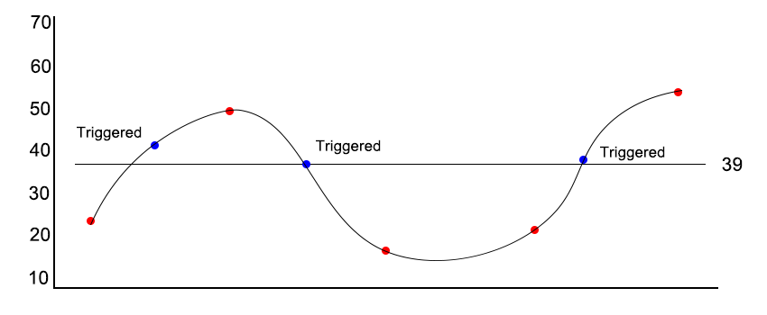

This alarm triggers when a stock price moves up by a specified dollar amount or percentage
Example: stock price is $100. Upper limit is set at $2.
An alarm will sound when the stock price meets or exceeds 102 then again at or above at 104 and so on
Price/Percent Change Decrease from Current
This alarm triggers when a stock price moves down by a specified dollar amount or percentage
Example: stock price is $100. Lower limit is set at $2.
An alarm will sound when the stock price meets or exceeds 98 then again at or below at 96 and so on
Price/Percent Change from Current
This alarm triggers when a stock price moves by a specified dollar amount or percentage in either direction.
Example: stock price is $100. Both Upper and Lower limits are set at $2.
An alarm will sound when the stock price meets or exceeds $102 or meets or drops at or below $98
24-hour Price/Percent Change
This alarm measures a price or percent change in a single 24-hour period.
Unlike regular price/percent change alarms, the app saves the most recent price every 24-hours whether the limit is hit or not.
Example: a stock price is $100. An investor sets an upper limit of 2 dollars per share.
If the stock price, for example, moves up 1 dollar within a 24-hour period, the app saves $101 and uses it against the limits for the next 24-hour period such that the change in price must now reach at least $103 to send an alarm. This gives an investor a sense of how far a stock will move day-to-day.
If a dollar amount (or percentage) you set is NOT regularly sending alarms in a day, it may be an indication that either A) that particular stock is not being traded at a very high volume or B) your limits are set too high or low.
Price Target
Just as it sounds, the price must hit or exceed a specified target price.
Example:the stock price is $100. An investor sets a target price of $110.
If the stock hits or exceeds $110, the alarm sounds.
For targeted alarms, you will ONLY be alerted if the stock price moves in a single direction to the target. This means that a target set above the current price will only trigger when the price moves up to meet or exceed the higher target. Similarly, setting a target below a stock price will only sound if the stock price moves down to meet or exceed the lower target.
To get an alert in both directions, you will need to set two alarms (see image below).
Using two alarms to create a price spread (with support on the bottom and resistance on the top) may help an investor detect breakouts in either direction or show how a stock drifts sideways.

Trailing Alarms
This style alarm works best when you’ve already placed an order with your broker that has automatic buying or selling limits in place which execute if the stock dips or rises by a specified dollar amount or percentage change.
Volume Percent Change
This alarm triggers when the volume of a stock moves by specified percentage. When a limit is hit or exceeded, a message is sent with the volume difference and current price
Volume Percent Deviation
This alarm triggers when the volume of a stock deviates by a set percentage from the 30-day average
Volume 24-hour Dip/Spike
This alarm triggers when the volume of a stock spikes or dips by a set percentage from the prior days average volume.
Recurring Alarms
Recurring alarms, as you may have guessed, triggers at a set time or interval. The set time options are, every morning at 9:30 AM, every afternoon at 12:30 PM, or every evening at 4:00 PM.
Interval options are, every hour on the hour, every half hour, or, and if you’re particularly neurotic, every fifteen minutes.
Events - Earnings & Dividends
This alarm works by setting a time period (one month, one week, three days, one day) from the expected event date and that will begin sending countdown updates once the current date is within the time period you set. So, if Apple earnings are to be posted in 10 days but you set a three-day alert, you will not begin receiving messages until the event is at least three days away and then you’ll receive one a day until the day of the event.